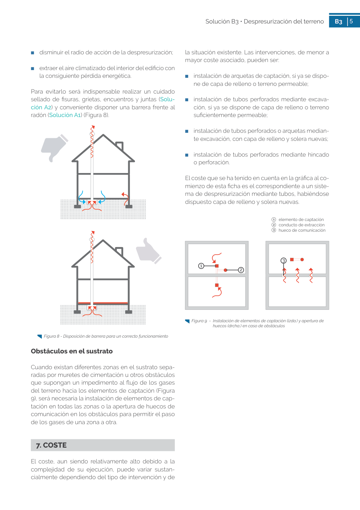

<!doctype html>
<html lang="es"><head><meta charset="utf-8">
<meta name="viewport" content="width=device-width, initial-scale=1">
<title>GUIA · Página física 56</title><link rel="stylesheet" href="../estilo.css">
</head><body>
<nav><a href="../index.html">Índice</a> › <a href="../doc/guia-pdf-f3314b0414fe-sin-fecha-e58e54b822cf.html">GUIA</a></nav>

<h1>GUIA · Página física 56</h1>
<header class="meta"><p><strong>Guia de rehabilitacion frente al radon Fichas</strong> · edición sin-fecha · capa guia</p>
<p>Documento <code>GUIA-PDF-f3314b0414fe</code> · SHA-256 del PDF <code>e58e54b822cf4ab00e258f0eb50c0f06a8c04e3730a7f530d224485e2a5bb02e</code></p>
<p>Página física 56 de 82.</p>
<p><a href="../../contenido/docs/GUIA-PDF-f3314b0414fe/sin-fecha__e58e54b822cf/fuente.pdf#page=56">Copia fiel del PDF fuente</a> · <a href="https://www.codigotecnico.org/pdf/GuiasyOtros/GuiaRadon/Guia_de_rehabilitacion_frente_al_radon+Fichas.pdf">Fuente oficial</a></p>
<p><a href="https://www.codigotecnico.org/Guias/GuiaRadon.html">Ficha de la disposición en la fuente oficial</a></p>
<div class="cita"><p><a href="../../contenido/docs/GUIA-PDF-f3314b0414fe/sin-fecha__e58e54b822cf/fuente.pdf#page=2">Créditos y autoría en el PDF fuente</a>. Reproducción con cita de fuente y autores.</p>
<p>Permiso literal: Se permite la reproducción total o parcial del contenido de este nible en el momento de su publicación. No se aceptará por las institu­ documento siempre y cuando se cite la fuente original</p>
<details><summary>Leer los créditos completos y la autoría</summary><pre class="literal">Este documento ha sido elaborado por el Instituto de ciencias
de la construcción Eduardo Torroja (IETcc) bajo la supervisión
de la Dirección General de Agenda Urbana y Arquitectura del
Ministerio de Transportes, Movilidad y Agenda Urbana (MITMA).

El IETcc, perteneciente al Consejo Superior de Investigaciones
Científicas (CSIC), es el centro de investigación en edificación
de referencia en España. La Unidad de Calidad en la Construc­
ción del IETcc asesora al MITMA en la elaboración del Código
Técnico de la Edificación que, desde el año 2019, cuenta con la
sección HS6 Protección frente a la exposición al radón.

Dirección y Coordinación:
Ministerio de Transportes, Movilidad y Agenda Urbana
 Isabel Marcos Anasagasti
 Raquel Lara Campos
 Eduardo González de Prado
Instituto de ciencias de la construcción Eduardo Torroja CSIC
 Pilar Linares Alemparte

Autoras:
 Pilar Linares Alemparte
 Sonia García Ortega

Colaboradoras:
 Virginia Sánchez Ramos
 Karina Angélica García Pardo

Edita:
 Centro de Publicaciones Secretaría General Técnica
 Ministerio de Transportes, Movilidad y Agenda Urbana©

Entidad colaboradora:
 Consejo Superior de Investigaciones Científicas · CSIC
 Ministerio de Ciencia e Innovación

    Catálogo de publicaciones de la Administración General
    del Estado: publicacionesoficiales.boe.es

    Centro virtual de publicaciones del Ministerio de Transpor­
     tes, Movilidad y Agenda Urbana: www.mitma.gob.es

    Página web del Código Técnico de la Edificación:

                                                                                                                                                                              SECRETARÍA                                                                                                                                                                     GENERAL                                                                                                                                                                         DE    www.codigotecnico.org                                                                                                                                              AGENDA URBANA                                                                                                                                                                           Y VIVIENDA                                                                                                                                                 MINISTERIO                                                                                                           GOBIERNO                                                                                                                           DE                                                                                                                                           TRANSPORTES,                                                                                                                                                 MOVILIDAD                                                                                                             DE ESPAÑA                                                                                                                               Y AGENDA                                                                                                                           URBANA                                                                                                                                                               DIRECCIÓN                                                                                                                                                                     GENERAL                                                                                                                                                                         DE
Maquetación y diseño gráfico:                                                                                                     AGENDA URBANAY ARQUITECTURA
 Lapizmente. Estrategia • Diseño Gráfico


                                                                                                                                             CIENCIAFotografía portada:                                                                                GOBIERNODE ESPAÑA      MINISTERIODEE INNOVACIÓN
 Sonia García Ortega

Los contenidos o ideas recogidas en este documento pertenecen a
sus autores. Este documento está basado en el conocimiento dispo­     Se permite la reproducción total o parcial del contenido de este
nible en el momento de su publicación. No se aceptará por las institu­     documento siempre y cuando se cite la fuente original y a sus
ciones ni los autores implicados responsabilidad de ningún tipo por el                                                                    autores.
uso de estas recomendaciones. Las figuras tienen carácter ilustrativo
y no deben interpretarse como detalles constructivos.</pre></details></div>
<div class="aviso"><strong>Alcance y límites</strong><ul><li>Extracción automática sin revisión técnica humana completa. Contraste tablas, fórmulas, notas y excepciones con el PDF. La edición disponible no determina la vigencia ni la aplicabilidad a un proyecto.</li><li>Guia o documento divulgativo; no es texto normativo.</li><li>Extracción automática; el cotejo humano está pendiente.</li><li>Semántica y tablas no equivalen a validación exhaustiva.</li></ul></div></header>
<nav><a href="guia-pdf-f3314b0414fe-sin-fecha-e58e54b822cf__p0055.html">← Página 55</a> · <a href="guia-pdf-f3314b0414fe-sin-fecha-e58e54b822cf__p0057.html">Página 57 →</a></nav>
<p>Formato: <a href="../../contenido/docs/GUIA-PDF-f3314b0414fe/sin-fecha__e58e54b822cf/pagina/p0056.md">Texto de la página (Markdown)</a></p>
<p><a href="../../contenido/docs/GUIA-PDF-f3314b0414fe/sin-fecha__e58e54b822cf/bloque/p0056.json">JSON de bloques</a></p>
<pre class="literal">5
Solución B3 • Despresurización del terreno
B3
5
	
■
disminuir el radio de acción de la despresurización;
	
■
extraer el aire climatizado del interior del edificio con 
la consiguiente pérdida energética.
Para evitarlo será indispensable realizar un cuidado 
sellado de fisuras, grietas, encuentros y juntas (Solu­
ción A2) y conveniente disponer una barrera frente al 
radón (Solución A1) (Figura 8).
  Figura 8 - Disposición de barrera para un correcto funcionamiento
Obstáculos en el sustrato
Cuando existan diferentes zonas en el sustrato sepa­
radas por muretes de cimentación u otros obstáculos 
que supongan un impedimento al flujo de los gases 
del terreno hacia los elementos de captación (Figura 
9), será necesaria la instalación de elementos de cap­
tación en todas las zonas o la apertura de huecos de 
comunicación en los obstáculos para permitir el paso 
de los gases de una zona a otra.
7. COSTE
El coste, aun siendo relativamente alto debido a la 
complejidad de su ejecución, puede variar sustan­
cialmente dependiendo del tipo de intervención y de 
la situación existente. Las intervenciones, de menor a 
mayor coste asociado, pueden ser:
	
■
instalación de arquetas de captación, si ya se dispo­
ne de capa de relleno o terreno permeable;
	
■
instalación de tubos perforados mediante excava­
ción, si ya se dispone de capa de relleno o terreno 
suficientemente permeable;
	
■
instalación de tubos perforados o arquetas median­
te excavación, con capa de relleno y solera nuevas;
	
■
instalación de tubos perforados mediante hincado 
o perforación.
El coste que se ha tenido en cuenta en la gráfica al co­
mienzo de esta ficha es el correspondiente a un siste­
ma de despresurización mediante tubos, habiéndose 
dispuesto capa de relleno y solera nuevas.
1
2
1   elemento de captación
2   conducto de extracción
3   hueco de comunicación
3
  Figura 9  -  Instalación de elementos de captación (izda.) y apertura de 
huecos (drcha.) en caso de obstáculos
</pre>
<figure><a href="../../contenido/docs/GUIA-PDF-f3314b0414fe/sin-fecha__e58e54b822cf/figura/p0056.png"></a><figcaption>Página visual 56, para contrastar fórmulas, tablas y figuras.</figcaption></figure><h2>Tablas extraídas</h2><p>Datos candidatos: compruebe celdas y notas en el PDF.</p><ul><li><a href="../../contenido/docs/GUIA-PDF-f3314b0414fe/sin-fecha__e58e54b822cf/tabla/p0056_t01.json">p0056_t01.json</a></li></ul>
<h2>Segmentos que incluyen esta página</h2><ul>
<li><a href="../apartado/guia-pdf-f3314b0414fe-sin-fecha-e58e54b822cf__a0197.html">a0197 · 1   conducto de extracción 2   extractor</a></li>
<li><a href="../apartado/guia-pdf-f3314b0414fe-sin-fecha-e58e54b822cf__a0198.html">a0198 · 1   conducto de extracción 2   extractor / Obstáculos en el sustrato</a></li>
<li><a href="../apartado/guia-pdf-f3314b0414fe-sin-fecha-e58e54b822cf__a0199.html">a0199 · 7. COSTE</a></li>
<li><a href="../apartado/guia-pdf-f3314b0414fe-sin-fecha-e58e54b822cf__a0200.html">a0200 · 1   elemento de captación 2   conducto de extracción</a></li>
<li><a href="../apartado/guia-pdf-f3314b0414fe-sin-fecha-e58e54b822cf__a0201.html">a0201 · 3   hueco de comunicación</a></li>
</ul>
<footer>Generado estáticamente desde el corpus normalizado; sin JavaScript ni servicios externos. El HTML es una vista reproducible; conserve la fuente y la edición al citar.</footer>
</body></html>
